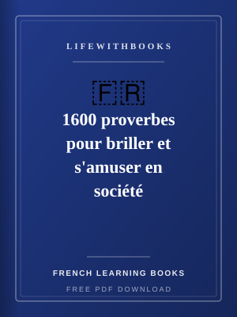
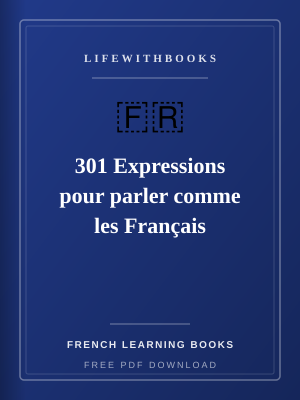
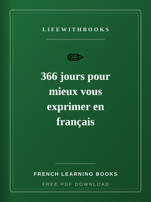
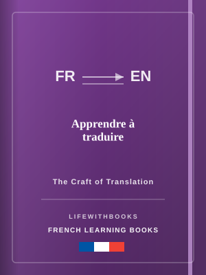
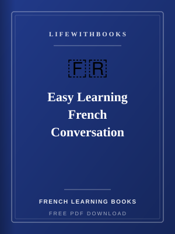
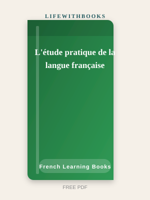
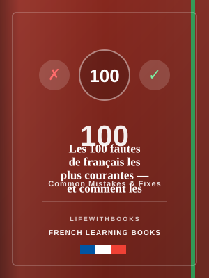
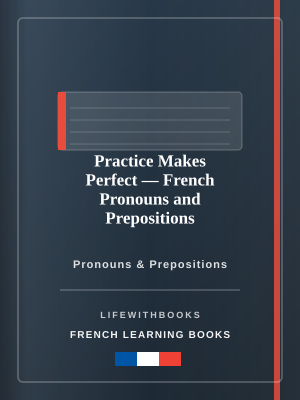
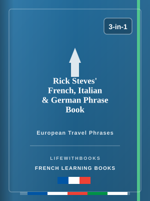

Free PDF

1600 proverbes pour briller et s'amuser en société
Original LifeWithBooks guide — A rich collection of 1,600 French proverbs, sayings and aphorisms dra
Download FreeFrench is simultaneously one of the world's most romantic languages and one of its most practically valuable. Spoken natively by 80 million people and officially by over 300 million across 29 countries on five continents, French is an official language of the United Nations, the European Union, the African Union, NATO, and dozens of other international organisations. In much of sub-Saharan Africa, French is the language of government, education, and professional advancement. In Canada, French fluency opens doors in Quebec and throughout the federal government. In France itself — the world's most visited country — French remains the language of culture, cuisine, fashion, and intellectual life in ways that no other country has matched. For Pakistani learners, French is increasingly available as a third language through the Alliance Française network in major cities, and French proficiency is an advantage for students seeking ERASMUS scholarships to European universities, for professionals in international development and humanitarian organisations, and for anyone working with international organisations where French and English rotate as working languages. Learning French requires navigating some genuine complexities. The spoken language and the written language are significantly more different from each other than in Spanish or German: written French preserves spelling conventions from medieval Latin and Old French that were never updated to match pronunciation changes. Many word-final letters are silent; liaison rules connect words in ways that change their sounds; gender must be memorised for every noun. Yet French also offers extraordinary rewards: a literature stretching from the medieval troubadours through Voltaire and Flaubert to Camus and contemporary voices, a cinematic tradition unmatched outside Hollywood, and a culinary vocabulary that has shaped restaurant culture around the world. The French learning library on LifeWithBooks includes conversational guides, examination preparation materials for DELF (Diplôme d'Études en Langue Française) certification, grammar practice books, and vocabulary enrichment resources. Some titles in this collection are written in French for advanced learners — a feature of a library that serves the full range from beginner to advanced. Download what your level requires and begin.
French pronunciation should be addressed from the very beginning of your studies, even if you are primarily interested in reading rather than speaking. French has sounds that do not exist in English — the nasal vowels (on, an, un, in), the uvular r, the rounded front vowels represented by u and eu — and developing an accurate mental model of French pronunciation from the start means that the words you read embed as sounds rather than as abstract letter patterns. This matters for comprehension and for long-term retention. The liaison rules of spoken French — where word-final consonants that are normally silent are pronounced when followed by a vowel-initial word — are best learned through listening alongside reading. Read a sentence in your practice book, then listen to it pronounced correctly and compare. This integrated approach builds the connection between written and spoken French that French learners who study only from books often lack. For grammar, French requires particular attention to agreement: adjectives agree in gender and number with the nouns they modify, past participles agree in specific contexts, and the reflexive construction appears in situations where English uses the passive. A grammar practice book like Practice Makes Perfect: French Pronouns and Prepositions works best when used as a targeted drill resource alongside a general course book rather than as a standalone study. Advanced learners should read authentic French texts as early as possible. Les 100 Fautes de Français les Plus Courantes — 100 of the most common French errors — is particularly valuable: understanding what even educated native speakers get wrong gives you a clear map of the genuinely difficult aspects of the language. Reading French literature in the original, even at intermediate level with a dictionary, is among the most effective advanced learning strategies available.

Original LifeWithBooks guide — A rich collection of 1,600 French proverbs, sayings and aphorisms dra
Download Free
Original LifeWithBooks guide — 301 authentic French idiomatic expressions and colloquial phrases tha
Download Free
Original LifeWithBooks guide — One expert tip per day on French grammar, vocabulary, style and commo
Download Free
Original LifeWithBooks guide — A guide to the craft of translation between French and other language
Download Free
Original LifeWithBooks guide — Collins' trusted guide to building everyday French conversation skill
Download Free
Original LifeWithBooks guide — A classic French schoolbook covering grammar, spelling, vocabulary, c
Download FreeOriginal LifeWithBooks guide — A fast-track introduction to French essentials for travellers and beg
Download Free
Original LifeWithBooks guide — The 100 most common errors in written and spoken French, clearly expl
Download Free
Original LifeWithBooks guide — Dedicated practice on two of the trickiest areas of French grammar —
Download Free
Original LifeWithBooks guide — Essential travel phrases in French, Italian and German from popular t
Download Free